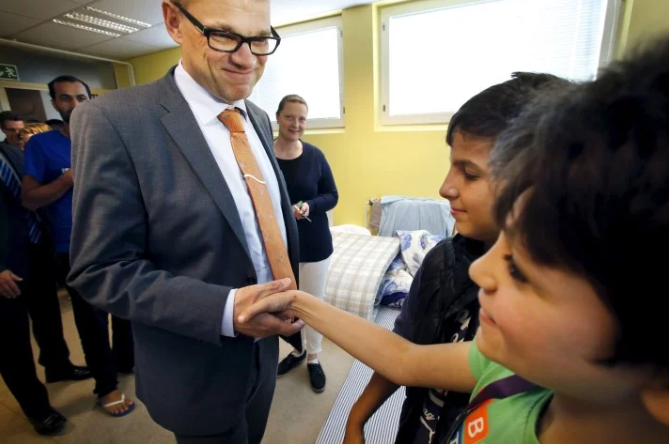
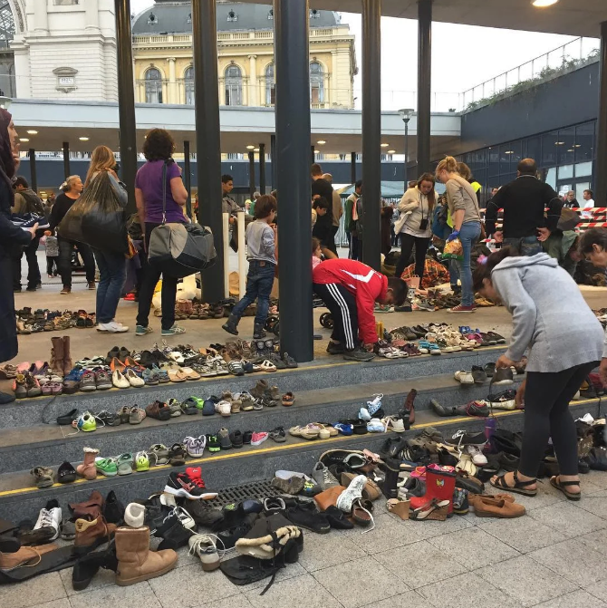
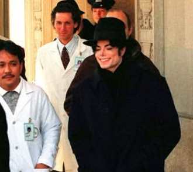

Hardships of Refugees
Understand the challenges refugees face before, during and after seeking safety, and learn how people can help.

Refugees often face many challenges before leaving home, during their journey and after arriving in a new country. Although these hardships can be difficult, people around the world work together to help refugees rebuild their lives.
Many refugees are forced to leave because their homes are no longer safe.
The journey to safety can be long, exhausting and dangerous.
Reaching a safe country is an important step, but refugees still face many challenges as they begin a new life.
Although refugees face many hardships, people around the world can help them build a brighter future.
Often unseen after arrival
A person may reach a peaceful place and still lie awake worrying about family, paperwork, housing or whether the new community will accept them. The World Health Organization explains that family separation, uncertain legal status, isolation, racism and barriers to services can all affect mental health after migration.
This does not mean refugees should be viewed only through trauma. People bring abilities, ambitions, humour, culture and the determination to rebuild. A welcoming classroom, secure home, fair chance to work or patient friendship can replace one layer of uncertainty with belonging.
What this asks of us: do not stop caring once a journey disappears from the news. Listen without demanding painful details, include without pity, and support services that help families build independent lives.
Learn more from the World Health Organization and UNICEF.
A document can unlock a life
Registration and identity papers can affect whether someone can enrol in school, receive health care, move safely or prove family relationships. For a child, a missing birth record is not a small administrative problem—it can close doors before life has properly begun.
Behind every form is a person asking to be recognised. Supporting fair documentation, family reunification and protection from statelessness helps turn survival into the possibility of a future.
Source: UNHCR Global Report 2025.
Around the world, many people have shown kindness to refugees. Here are three inspiring examples.

Finland's Prime Minister, Juha Sipilä, offered his own home to help refugees and encouraged others to think about how they could help people escaping danger. His actions showed that kindness and leadership can inspire others to support those in need.

Many refugees arrived with very few belongings, and some did not even have shoes. Hundreds of volunteers donated shoes, blankets, baby clothes and food to help them. Their generosity showed that even small acts of kindness can make a big difference.

Michael Jackson shared a promise to continue helping children who were sick, homeless, hungry or in need. His message reminds us that kindness, generosity and compassion can make a real difference in people's lives.
When Russia invaded Ukraine in 2022, millions of people were forced to leave their homes. Families travelled to neighbouring countries such as Poland, Romania and Slovakia to find safety. Many experienced the same hardships described on this page before beginning to rebuild their lives.
Helping refugees doesn't always require doing something big. Donating food, clothing, school supplies or money, volunteering your time, welcoming newcomers or simply learning about refugee experiences can all make a positive difference.
Every act of kindness gives hope to someone who has had to leave everything behind. By working together, we can help refugees feel safe, respected and welcome in their new communities.
Definitions and protection information were reviewed against UNHCR. Information about displaced children was checked against UNICEF. Last reviewed 11 September 2026. Read our editorial policy and statistics methodology.
Together, we can help refugees find safety, hope and a brighter future.